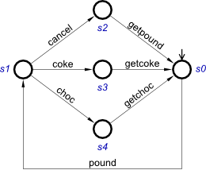
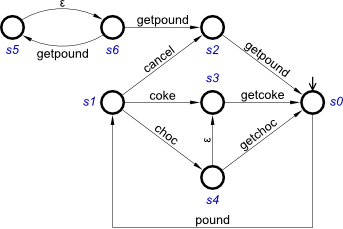

tutorial:modelling:fsm:start
Modelling with Finite State Machines: Vending Machine
Exercise 1: Basic Vending Machine
The following FSM models a basic Vending Machine.

Re-create it in Workcraft:
- Select File→Create work…
- Select Finite State Machine from the list of model types
- Use Editor tools panel to draw the FSM. Note that:
s0is the initial state; this can be set by selecting a node and editing its properties using the Property editor panel- action names are given on arcs – they can be set by selecting an arc and editing its properties using the Property editor panel
- the arcs don’t have to be straight (see e.g. the arc from
s0tos1in the picture below) – you can use polylines and/or Bezier curves
- Make sure to save your work!
Simulate your model (by pressing the ![[M] Simulate](../../help/editor_tools-simulate.png "[M] Simulate") button in the Editor tools panel). Try to re-create the following scenarios:
button in the Editor tools panel). Try to re-create the following scenarios:
- buying a coke and then a chocolate
- inserting a coin and then cancelling
- inserting a coin, ordering coke and then cancelling (this scenario should be impossible)
Formally verify (using Verification menu) whether the FSM
- has deadlocks
- has unreachable states
- is reversible
- is deterministic
Exercise 2: Strange Vending Machine
Re-create the following FSM in Workcraft (and save it in a different file).

Simulate your model. Try to re-create the following scenarios:
- buying a coke and then a chocolate
- inserting a coin and then cancelling
- ordering a chocolate but getting a coke instead
- try to drive the FSM to state
s6that enables a windfall of coins (this scenario should be impossible)
Verify the properties of this FSM as in the previous exercise. Can you explain the verification results?